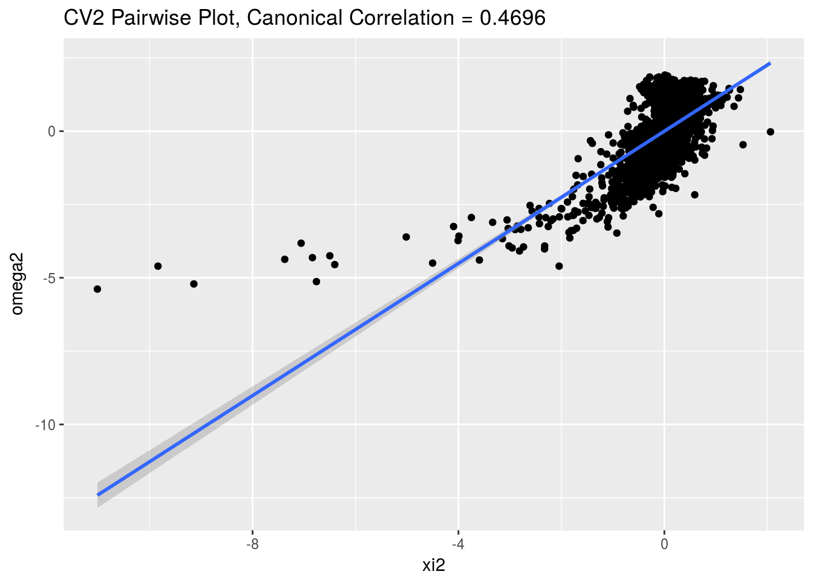

rrr for Canonical Variate Analysis
Chris Addy
2016-11-24
set.seed(12345) The COMBO17 Data Set
### COMBO-17 galaxy data
data(COMBO17)
galaxy <- as_data_frame(COMBO17) %>%
select(-starts_with("e."), -Nr, -UFS:-IFD) %>%
na.omit()
#glimpse(galaxy)galaxy_x <- galaxy %>%
select(-Rmag:-chi2red)
galaxy_y <- galaxy %>%
select(Rmag:chi2red)GGally::ggcorr(galaxy_x)
GGally::ggcorr(galaxy_y)
Assessing Effective Dimensionality
Estimate \(t\) and \(k\) with cva_rank_trace() and cva_rank_trace_plot()
cva_rank_trace(galaxy_x, galaxy_y)## # A tibble: 7 × 3
## ranks dC dEE
## <int> <dbl> <dbl>
## 1 0 1.00000000 1.0000000000
## 2 1 0.31997913 0.0929573793
## 3 2 0.28812548 0.0106490385
## 4 3 0.12985784 0.0031004613
## 5 4 0.04836781 0.0010833504
## 6 5 0.04004294 0.0004057821
## 7 6 0.00000000 0.0000000000cva_rank_trace_plot(galaxy_x, galaxy_y)
args(cva_error)## function (x, y, x_new, y_new, rank = "full", type = "cov", k = 0)
## NULL### create training and test sets
num_obs <- dim(galaxy)[1]
train_number <- floor(.75 * num_obs)
train_index <- sample(num_obs, train_number)
### training set
train_galaxy_x <- galaxy_x[train_index, ]
train_galaxy_y <- galaxy_y[train_index, ]
### test set
test_galaxy_x <- galaxy_x[-train_index, ]
test_galaxy_y <- galaxy_y[-train_index, ]Diagnostics
#cva_residual_plot(galaxy_x, galaxy_y, rank = 2, k = 0.001)cv_pairwise_plot(galaxy_x, galaxy_y, cv_pair = 1, k = 0.0001)
cv_pairwise_plot(galaxy_x, galaxy_y, cv_pair = 2, k = 0.0001)
rrcva(galaxy_x, galaxy_y, rank = 2, k = 0.0001)## $mean
## [,1]
## [1,] 28.388670
## [2,] 1.087370
## [3,] 26.721374
## [4,] -1.166768
## [5,] -1.025344
## [6,] 2.080132
##
## $G
## UjMAG BjMAG VjMAG usMAG gsMAG rsMAG
## [1,] 0.08245937 0.002984345 0.8404642 0.06621581 -0.08236586 -0.5801623
## [2,] -1.49675657 0.025440724 -3.5397513 2.13792464 0.85714917 2.9283156
## UbMAG BbMAG VnMAG S280MAG W420FE W462FE
## [1,] 0.2621465 -0.13452477 0.01348103 0.005561194 -1.486574 -1.270471
## [2,] -1.0059161 0.04282791 -0.05596699 0.036077743 -15.768191 -6.405781
## W485FD W518FE W571FS W604FE W646FD W696FE
## [1,] -1.241862 -0.0135883 -0.4363435 0.6564723 0.9527079 0.7664007
## [2,] -1.115042 8.1665877 3.6251209 3.6098337 -1.4617020 -5.0376775
## W753FE W815FS W856FD W914FD W914FE
## [1,] 1.769078 0.1174032 -0.09706001 -1.957314 -0.4242234
## [2,] 3.334887 -8.2879583 -0.73423587 2.118483 1.9730962
##
## $H
## [,1] [,2] [,3] [,4] [,5] [,6]
## [1,] 0.5617072 0.4771916 -0.1235694 -1.4243677 -1.3820735 0.5999989
## [2,] 0.2899655 -0.1054661 0.4309957 0.5848668 0.5736387 -0.2302836
##
## $canonical_corr
## [1] 0.93863397 0.46957833 0.07553122 0.02573175 0.01503215 0.01113977